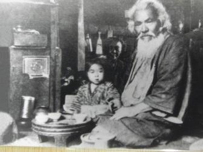

Kanagusuku Sanda (1841-1921), or in Japanese, Kinjo Sanda. He founded Ufuchiku Kobudo. He was a police commissioner (ufuchiku) by trade,[ hence the name of the style. Although his actual teachers are unknown, he hinted that he had studied under Ishimine Peichin, though this is not confirmed. He also acquired much of his weapons knowledge on the streets of Okinawa, dealing with criminals. He served as a guard to the last Okinawan king, Sho Tai, and he accompanied him to Edo as part of the Ryukyu entourage, serving as the overseer of the royal horses. Kanagusuku Ufuchiku has several students, including Gibo Kamado, Gusukuma Rio, Kanagusuku Shinko, Tokashiki Saburo, Yabiku Moden, Hisataka Kori, and Shosei Kina, to name a few. This is a rare system and is rarely taught, even in Okinawa.